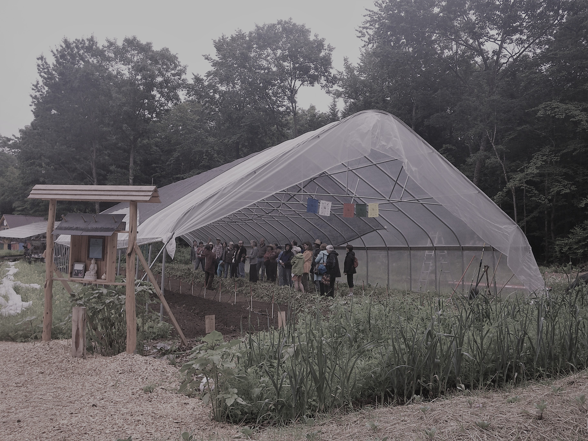

THE FARM
Our self-serve farmstand at 165 Chestnut Hill Road Orange will re-open in early April. Thank you for your patronage, it means a lot. We were recently awarded a grant from the Harold Grinspoon Foundation Local Farm program that enables the purchase of a larger, upright refrigerator for our solar-powered farmstand! Can’t wait to get and install it and we think you will love it too.
Did you know there is a soil microbe that creates happiness? Are you interested in volunteering on our no-till human powered farm on Mondays and/or Tuesdays through the spring, summer, and fall? Grow through the seasons each week, as you experience a diversity of approaches to no-till farming for life! Volunteers may come either day, but consistency and commitment is important. We work hard with great conversation and offer you learning, lunch and some veggies to take home. Call Ricky at 978-544-7564 to talk about volunteering.
 Seeds of Solidarity Farm was initiated in 1996, on land in the middle of the forest that had not been cultivated for many years, and the original inhabitants of the region being the Wampanoag, Nipmuc, and Pequoit people. A conservation restriction on our 30 acres ensures the land will always be used for agriculture, education, and wildlife habitat. With nature as teacher, the land has been transformed into fertile fields and hosts 5 solar hoophouses brimming with our signature greens, fruit and perennial crops, garlic and sacred, traditional crops such as Hopi blue and Narraganset flour corn. The tapestry of our site includes energy efficient and off the grid home, office, and farm outbuildings, including Solidarity Handworks, a solar powered farmstand, and celebration art and words of inspiration along the paths.
With the growth in people wanting local food, we ask, ‘How can more people participate not only as consumers, but producers?’ To build local food self-reliance, we need accessible, affordable and yes, fun practices that mimic nature, help decentralize food production and engage more people in cultivating the earth in order to Grow Food Everywhere. We use cardboard on marginal land to foster worms, microbes and mychorrizal fungi that decompose the cardboard and build a fertile soil ecosystem. In addition to an increase in worm castings (poop), using cardboard as mulch helps balance moisture, keep weeds down, and create no-till carbon sinks that retain rather than release CO2 into the atmosphere. Cardboard- a waste product available in most communities– is key to growing gardens on lawns, lots, school yards, municipal buildings for opening up and improving plots of land.
It is an honor to grow food in solidarity with small farmers around the world, and those everywhere helping to feed the people.
Growing Food
Seeds of Solidarity Farm emphasizes soil building and worm production through permanent no-till raised beds and fields. We use cardboard, mulch, and cover crops to nourish and open up land and nourish the life in the soil. We’ve had great success transforming forested, acid land marginal for growing vegetables into balanced and rich agricultural soil. Without a need to till, there is no need for machinery that uses fossil fuels and release carbon when tilling; we grow in solidarity with the 80% of the world’s farmers that cultivate the earth with their hands. We use solar hoophouses to grow vibrant salad greens, spinach, and Asian greens from February through December, as well as tomatoes, peppers, and other hot weather crops. Hoophouses extend the growing season and protect from pests and weather extremes increasingly wrought by climate change. Increasingly, we grow sacred crops such as traditional corns, wheat, and tobacco.
Our family farm is distinct from the non-profit organization, but serves as an educational space to share strategies for viable small scale intensive farming. After 25 years of marketing produce retail and wholesale, from farmers markets to restaurants, we now sell our produce exclusively at our farmstand and to our very local food coop. In addition, we cultivate over 14 varieties of garlic, sold at the North Quabbin Garlic and Arts Festival.
We are happy to share a few resources to support no-till farming and gardening for life, and efforts to Grow Food Everywhere!
RESOURCES:
Small Scale No Till Vegetable At Seeds Of Solidarity Farm
Creating The Worm's Perfect Single's Bar
Solidarity Handworks Farmstand
Our sweet farmstand is located at our site, 165 Chestnut Hill Road, Orange. We are famous for our delicious salads and greens, grown in fertile soil in our solar greenhouses and available March through November. The farmstand is self-serve and our cooler is powered by a solar electric system. Heirloom and gorgeous vegetables fill the shelves at the height of the season. We sell most of our garlic at the North Quabbin Garlic and Arts Festival but any left will go in our farmstand in October for your planting and eating pleasure.
As both farmer and artist, Ricky creates beautiful, sacred rustic pieces for custom order. Pieces are made from local red cedar, harvested with love, then crafted by hand into meditation benches, altars, tables, and coat racks, with beautiful inlays of blue corn and red pepper- looks like precious stone! All done with love, in a solar powered studio on our farm.
The phone number for the farm, and Solidarity Handworks if you wish to talk about and place an order is 978-544-7564. Ask forRicky, and feel free to leave a message.Your purchases support our livelihood as a family working with the land.